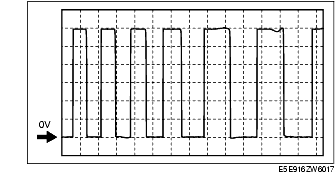

Workshop Manual ➭ BODY & ACCESSORIES ➭ EXTERIOR TRIM ➭ POWER RETRACTABLE HARDTOP CONTROL MODULE INSPECTION
POWER RETRACTABLE HARDTOP CONTROL MODULE INSPECTION
id091600809600
{: #wp1059776}
- Remove the following parts:
(1) Console (See CONSOLE REMOVAL/INSTALLATION.) {: #wp1059786}(2) Quarter trim (See QUARTER TRIM REMOVAL/INSTALLATION.) {: #wp1059804}(3) Scuff plate (See SCUFF PLATE REMOVAL/INSTALLATION.) {: #wp1059822}(4) Tire house trim (See TIRE HOUSE TRIM REMOVAL/INSTALLATION.) {: #wp1059840}(5) Aeroboard (See AEROBOARD REMOVAL/INSTALLATION.) {: #wp1059858}(6) Front seat back bar garnish (See SEAT BACK BAR GARNISH REMOVAL/INSTALLATION.) {: #wp1059876}(7) Back trim (See BACK TRIM REMOVAL/INSTALLATION.)
- Attach the tester lead to the power retractable hardtop control module wiring harness-side connector and inspect voltage, continuity, or resistance according to the standard (reference) on the table.
Standard (Reference)
|
Signal {: #wp1060133} |
Connected to {: #wp1060135} |
Test condition {: #wp1060137} |
Standard {: #wp1060141} |
Inspection item {: #wp1060143} |
||
|---|---|---|---|---|---|---|
|
1A {: #wp1059953} |
Trunk lid opener relay output signal {: #wp1059955} |
Trunk lid opener relay {: #wp1060011} |
The deck panel is in the fully closed position. {: #wp1060014} |
B+ {: #wp1060020} |
• Deck panel limit switch {: #wp1060023} • Trunk lid opener relay {: #wp1060403} • Related wiring harness {: #wp1060413} |
|
|
The deck panel is not in the fully closed position. {: #wp1060187} |
1.0 or less {: #wp1060193} |
|||||
|
1B {: #wp1060200} |
|
|
|
|
|
|
|
1C {: #wp1060222} |
Power window input signal {: #wp1060225} |
Power window main switch {: #wp1060228} |
Under any condition: Inspect for continuity to power window main switch. {: #wp1060231} |
Continuity detected {: #wp1060237} |
• Power window main switch {: #wp1060240} • Related wiring harness {: #wp1060501} |
|
|
1D {: #wp1060244} |
Top lock input signal {: #wp1060247} |
Top lock switch {: #wp1060250} |
Ignition switch is turned to the ON position {: #wp1060253} |
When the top lock is locked. {: #wp1060256} |
1.0 or less {: #wp1060259} |
• Top lock switch {: #wp1060262} • Related wiring harness {: #wp1060554} |
|
When the top lock is unlocked. {: #wp1060278} |
B+ {: #wp1060281} |
|||||
|
1E {: #wp1060288} |
Power window full-open request signal (Output) {: #wp1060291} |
Power window main switch {: #wp1060294} |
Under any condition: Inspect for continuity to power window main switch. {: #wp1060297} |
Continuity detected {: #wp1060303} |
• Power window main switch {: #wp1060306} • Related wiring harness {: #wp1060614} |
|
|
1F {: #wp1060310} |
Trunk lid latch switch signal {: #wp1060313} |
Trunk lid latch switch {: #wp1060316} |
When the trunk lid is open. {: #wp1060319} |
1.0 or less {: #wp1060325} |
• Trunk lid latch switch {: #wp1060328} • Related wiring harness {: #wp1060684} |
|
|
When the trunk lid is closed. {: #wp1060631} |
B+ {: #wp1060637} |
|||||
|
1G {: #wp1060703} |
Hall effect sensor power supply {: #wp1060706} |
• Roof Motor {: #wp1060709} • Deck panel motor {: #wp1060772} |
Ignition switch is turned to the ON position {: #wp1060712} |
When the roof panel or deck panel is not moving. {: #wp1060715} |
1.0 or less {: #wp1060718} |
• Roof Motor {: #wp1060721} • Deck panel Motor {: #wp1060810} • Related wiring harness {: #wp1060820} |
|
When the roof panel or deck panel is moving. {: #wp1060737} |
B+ {: #wp1060740} |
|||||
|
1H {: #wp1060839} |
Input signal of the roof panel open/close switch {: #wp1060842} |
Power retractable hardtop switch (hazard warning switch) {: #wp1060845} |
Ignition switch is turned to the ON position {: #wp1060848} |
Opening switch on {: #wp1060851} |
approx. 2.5 {: #wp1060854} |
• Power retractable hardtop switch {: #wp1060857} • Related wiring harness {: #wp1060952} |
|
Closing switch on {: #wp1060895} |
approx. 3.4 {: #wp1060898} |
|||||
|
Other {: #wp1060873} |
approx. 5.0 {: #wp1060876} |
|||||
|
1I {: #wp1060980} |
Roof motor hall sensor input signal (RH) {: #wp1060983} |
Roof motor (RH) {: #wp1060986} |
When the roof is moving. {: #wp1060989} |
Pulse is output. {: #wp1060992} (See Inspection using an oscilloscope (reference).) {: #wp1061029} |
• Roof motor (RH) {: #wp1060998} • Related wiring harness {: #wp1061056} |
|
|
1J {: #wp1061064} |
Power supply {: #wp1061067} |
ROOM 15 A fuse {: #wp1061070} |
Under any condition {: #wp1061073} |
B+ {: #wp1061079} |
• ROOM 15 A fuse {: #wp1061082} • Related wiring harness {: #wp1061131} |
|
|
1K {: #wp1061139} |
Deck panel motor hall sensor input signal (RH) {: #wp1061142} |
Deck panel motor (RH) {: #wp1061145} |
When the deck panel is moving. {: #wp1061148} |
Pulse is output. {: #wp1061151} (See Inspection using an oscilloscope (reference).) {: #wp1061192} |
• Deck panel motor (RH) {: #wp1061157} • Related wiring harness {: #wp1061219} |
|
|
1L {: #wp1061227} |
|
|
|
|
|
|
|
1M {: #wp1061287} |
Roof motor hall sensor input signal (LH) {: #wp1061290} |
Roof motor (LH) {: #wp1061293} |
When the roof is moving. {: #wp1061296} |
Pulse is output. {: #wp1061299} (See Inspection using an oscilloscope (reference).) {: #wp1061344} |
• Roof motor (LH) {: #wp1061305} • Related wiring harness {: #wp1061371} |
|
|
1N {: #wp1061379} |
|
|
|
|
|
|
|
1O {: #wp1061443} |
Deck panel motor hall sensor input signal (LH) {: #wp1061446} |
Deck panel motor (LH) {: #wp1061449} |
When the deck panel is moving. {: #wp1061452} |
Pulse is output. {: #wp1061455} (See Inspection using an oscilloscope (reference).) {: #wp1061504} |
• Deck panel motor (LH) {: #wp1061461} • Related wiring harness {: #wp1061531} |
|
|
1P {: #wp1061539} |
|
|
|
|
|
|
|
1Q {: #wp1061607} |
Hall effect sensor GND {: #wp1061610} |
GND {: #wp1061613} |
Under any condition: Inspect for continuity to GND. {: #wp1061616} |
Continuity detected {: #wp1061622} |
• Related wiring harness {: #wp1061625} |
|
|
1R {: #wp1061683} |
Roof close position switch input signal {: #wp1061686} |
Power retractable hardtop limit switch {: #wp1061689} |
Ignition switch is turned to the ON position {: #wp1061692} |
When the roof panel is fully closed. {: #wp1061695} |
1.0 or less {: #wp1061698} |
• Power retractable hardtop limit switch {: #wp1061701} • Related wiring harness {: #wp1061828} |
|
When the roof panel is not fully closed. {: #wp1061725} |
B+ {: #wp1061728} |
|||||
|
1S {: #wp1061847} |
CAN-H {: #wp1061850} |
|
Because this terminal is for communication, good/no good judgment by terminal voltage is not possible. {: #wp1061856} |
|
• Related wiring harnesses {: #wp1061865} |
|
|
1T {: #wp1061926} |
Roof open position switch input signal {: #wp1061929} |
Power retractable hardtop limit switch {: #wp1061932} |
Ignition switch is turned to the ON position {: #wp1061935} |
When the roof panel is fully open. {: #wp1061938} |
1.0 or less {: #wp1061941} |
• Power retractable hardtop limit switch {: #wp1061944} • Related wiring harness {: #wp1062071} |
|
When the roof panel is not fully open. {: #wp1061968} |
B+ {: #wp1061971} |
|||||
|
1U {: #wp1062090} |
CAN-L {: #wp1062093} |
|
Because this terminal is for communication, good/no good judgment by terminal voltage is not possible. {: #wp1062099} |
|
• Related wiring harnesses {: #wp1062108} |
|
|
1V {: #wp1062169} |
Signal GND {: #wp1062172} |
Power retractable hardtop limit switch/deck panel limit switch {: #wp1062175} |
Ignition switch is turned to the ON position {: #wp1062178} |
Under any condition {: #wp1062181} |
1.0 or less {: #wp1062184} |
• Related wiring harness {: #wp1062187} |
|
1W {: #wp1062244} |
Signal GND {: #wp1062247} |
GND {: #wp1062250} |
Under any condition: Inspect for continuity to GND. {: #wp1062253} |
Continuity detected {: #wp1062259} |
• Related wiring harness {: #wp1062262} |
|
|
1X {: #wp1062320} |
IG1 {: #wp1062323} |
ENGINE 15 A fuse {: #wp1062326} |
IG ON {: #wp1062329} |
B+ {: #wp1062335} |
• Related wiring harness {: #wp1062338} |
|
|
When the ignition switch is not in the ON position. {: #wp1062359} |
1.0 or less {: #wp1062365} |
|||||
|
2A {: #wp1062477} |
Power supply {: #wp1062480} |
Main fuse block {: #wp1062483} |
Under any condition {: #wp1062486} |
B+ {: #wp1062492} |
• Related wiring harness {: #wp1062495} |
|
|
2B {: #wp1062554} |
Power supply {: #wp1062557} |
Main fuse block {: #wp1062560} |
Under any condition {: #wp1062563} |
B+ {: #wp1062569} |
• Related wiring harness {: #wp1062572} |
|
|
2C {: #wp1062631} |
Indicator light output signal {: #wp1062634} |
Power retractable hardtop Indicator light {: #wp1062637} (hazard warning switch) {: #wp1062732} |
Ignition switch is turned to the ON position {: #wp1062640} |
Illuminated {: #wp1062643} |
1.0 or less {: #wp1062646} |
• Hazard switch {: #wp1062649} • Related wiring harness {: #wp1062782} |
|
Not illuminated {: #wp1062673} |
B+ {: #wp1062676} |
|||||
|
2D {: #wp1062801} |
|
|
|
|
|
|
|
2E {: #wp1062869} |
Power GND {: #wp1062872} |
GND {: #wp1062875} |
Under any condition: Inspect for continuity to GND. {: #wp1062878} |
Continuity detected {: #wp1062884} |
• Related wiring harness {: #wp1062887} |
|
|
2F {: #wp1062945} |
Power GND {: #wp1062948} |
GND {: #wp1062951} |
Under any condition: Inspect for continuity to GND. {: #wp1062954} |
Continuity detected {: #wp1062960} |
• Related wiring harness {: #wp1062963} |
|
|
3A {: #wp1063021} |
Roof motor control (open) {: #wp1063024} |
Roof motor (RH) {: #wp1063027} |
Ignition switch is turned to the ON position {: #wp1063030} |
Roof panel open operation {: #wp1063033} |
B+ {: #wp1063036} |
• Roof motor (RH) {: #wp1063039} • Related wiring harness {: #wp1063189} |
|
Roof panel close operation {: #wp1063085} |
1.0 or less*1 {: #wp1063088} |
|||||
|
Other {: #wp1063063} |
approx. 2 {: #wp1063066} |
|
||||
|
3B {: #wp1063229} |
|
|
|
|
|
|
|
3C {: #wp1063299} |
|
|
|
|
|
|
|
3D {: #wp1063369} |
Roof motor control (close) {: #wp1063372} |
Roof motor (LH) {: #wp1063375} |
Ignition switch is turned to the ON position {: #wp1063378} |
Roof panel open operation {: #wp1063381} |
1.0 or less*1 {: #wp1063384} |
• Roof motor (LH) {: #wp1063387} • Related wiring harness {: #wp1063551} |
|
Roof panel close operation {: #wp1063434} |
B+ {: #wp1063437} |
|||||
|
Other {: #wp1063412} |
approx. 2 {: #wp1063415} |
|
||||
|
3E {: #wp1063585} |
Deck panel motor control (close) {: #wp1063588} |
Deck panel motor (RH) {: #wp1063591} |
Ignition switch is turned to the ON position {: #wp1063594} |
Deck panel open operation {: #wp1063597} |
1.0 or less*1 {: #wp1063600} |
• Deck panel motor (RH) {: #wp1063603} • Related wiring harness {: #wp1063774} |
|
Deck panel close operation {: #wp1063651} |
B+ {: #wp1063654} |
|||||
|
Other {: #wp1063629} |
approx. 2 {: #wp1063632} |
|||||
|
3F {: #wp1063803} |
Deck panel open position sensor input signal {: #wp1063806} |
Deck panel limit switch {: #wp1063809} |
Ignition switch is turned to the ON position {: #wp1063812} |
When the deck panel is fully open. {: #wp1063815} |
1.0 or less {: #wp1063818} |
• Deck panel limit switch {: #wp1063821} • Related wiring harness {: #wp1063969} |
|
When the deck panel is not fully open. {: #wp1063848} |
B+ {: #wp1063851} |
|||||
|
3G {: #wp1063988} |
|
|
|
|
|
|
|
3H {: #wp1064062} |
Deck panel motor control (open) {: #wp1064065} |
Deck panel motor (LH) {: #wp1064068} |
Ignition switch is turned to the ON position {: #wp1064071} |
Deck panel open operation {: #wp1064074} |
B+ {: #wp1064077} |
• Deck panel motor (LH) {: #wp1064080} • Related wiring harness {: #wp1064251} |
|
Deck panel close operation {: #wp1064129} |
1.0 or less*1 {: #wp1064132} |
|||||
|
Other {: #wp1064107} |
approx. 2 {: #wp1064110} |
|||||
|
3I {: #wp1064281} |
Roof motor control (close) {: #wp1064284} |
Roof motor (RH) {: #wp1064287} |
Ignition switch is turned to the ON position {: #wp1064290} |
Roof panel open operation {: #wp1064293} |
1.0 or less*1 {: #wp1064296} |
• Roof motor (RH) {: #wp1064299} • Related wiring harness {: #wp1064477} |
|
Roof panel close operation {: #wp1064348} |
B+ {: #wp1064351} |
|||||
|
Other {: #wp1064326} |
approx. 2 {: #wp1064329} |
|||||
|
3J {: #wp1064506} |
|
|
|
|
|
|
|
3K {: #wp1064582} |
|
|
|
|
|
|
|
3L {: #wp1064658} |
Roof motor control (open) {: #wp1064661} |
Roof motor (LH) {: #wp1064664} |
Ignition switch is turned to the ON position {: #wp1064667} |
Roof panel open operation {: #wp1064670} |
B+ {: #wp1064673} |
• Roof motor (LH) {: #wp1064676} • Related wiring harness {: #wp1064854} |
|
Roof panel close operation {: #wp1064726} |
1.0 or less*1 {: #wp1064729} |
|||||
|
Other {: #wp1064704} |
approx. 2 {: #wp1064707} |
|||||
|
3M {: #wp1064889} |
Deck panel motor control (open) {: #wp1064892} |
Deck panel motor (RH) {: #wp1064895} |
Ignition switch is turned to the ON position {: #wp1064898} |
Deck panel open operation {: #wp1064901} |
B+ {: #wp1064904} |
• Deck panel motor (RH) {: #wp1064907} • Related wiring harness {: #wp1065092} |
|
Deck panel close operation {: #wp1064958} |
1.0 or less*1 {: #wp1064961} |
|||||
|
Other {: #wp1064936} |
approx. 2 {: #wp1064939} |
|||||
|
3N {: #wp1065127} |
|
|
|
|
|
|
|
3O {: #wp1065207} |
Deck panel close position sensor input signal {: #wp1065210} |
Deck panel limit switch {: #wp1065213} |
Ignition switch is turned to the ON position {: #wp1065216} |
Except closed position {: #wp1065219} |
1.0 or less {: #wp1065222} |
• Deck panel limit switch {: #wp1065225} • Related wiring harness {: #wp1065394} |
|
Closed position {: #wp1065255} |
B+ {: #wp1065258} |
|||||
|
3P {: #wp1065413} |
Deck panel motor control (close) {: #wp1065416} |
Deck panel motor (LH) {: #wp1065419} |
Ignition switch is turned to the ON position {: #wp1065422} |
Deck panel open operation {: #wp1065425} |
1.0 or less*1 {: #wp1065428} |
• Deck panel motor (LH) {: #wp1065431} • Related wiring harness {: #wp1065630} |
|
Deck panel close operation {: #wp1065483} |
B+ {: #wp1065486} |
|||||
|
Other {: #wp1065461} |
approx. 2 {: #wp1065464} |
|||||
*1 : {: #wp1065676} The voltage increases during operation speed control of the roof and deck panel.
Inspection using an oscilloscope (reference)
Roof motor hall sensor
• Terminal connected: power retractable hardtop control module 1I (RH), 1M (LH)-Negative battery terminal

{: #wp1065716}• Oscilloscope setting: 2 V/DIV (Y): 5 ms/DIV (X), DC range
{: #wp1065777}• Measurement condition: When the roof is moving.
*Note*{: #wp1065801}
• Pulse interval varies with the roof operation speed.
Deck panel motor hall sensor
• Terminal connected: power retractable hardtop control module 1K (RH), 1O (LH)-Negative battery terminal
{: #wp1065829}• Oscilloscope setting: 2 V/DIV (Y): 5 ms/DIV (X), DC range
{: #wp1065858}• Measurement condition: When the deck panel is moving.
*Note*{: #wp1065882}
• Pulse interval varies with the deck panel operation speed.